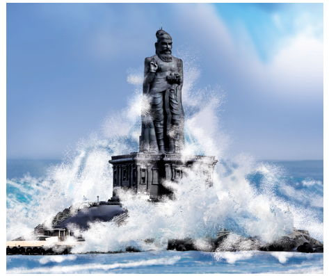
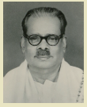
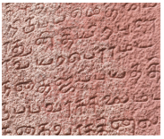
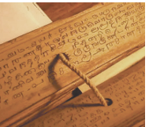
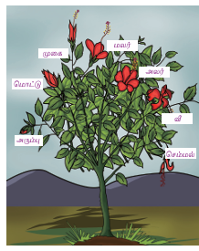
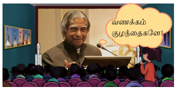
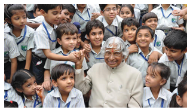
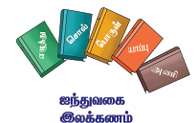
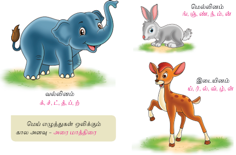

நுழையும் முன்
நமது தாய்மொழியாகிய தமிழைத் தமிழ் இலக்கியங்கள் போற்றுகின்றன. தமிழ் வணக்கம் தற்கால இலக்கிய மரபாக ஆகிவிட்டது. பாரதிதாசன் தமிழைப் பலவாறாகப் போற்றுகிறார். கண்ணே மணியே என்று குழந்தையைச் செல்லமாகக் கொஞ்சுவதும் உண்டு. அதுபோல அவர் நம் செந்தமிழுக்குப் பெயர்கள் பல சூட்டி மகிழ்வதைக் காண்போம்.
தமிழுக்கும் அமுதென்று பேர் அந்தத்
தமிழ் இன்பத் தமிழ்எங்கள் உயிருக்கு நேர், மனப்பாடப் பகுதி
தமிழுக்கு நிலவென்று பேர் இன்பத்
தமிழ் எங்கள் சமூகத்தின் விளைவுக்கு நீர், மனப்பாடப் பகுதி
தமிழுக்கு மணமென்று பேர் இன்பத்
தமிழ் எங்கள் வாழ்வுக்கு நிருமித்த ஊர், மனப்பாடப் பகுதி
தமிழ் எங்கள் இளமைக்குப் பால் இன்பத்
தமிழ் நல்ல புகழ்மிக்க புலவர்க்கு வேல், மனப்பாடப் பகுதி
தமிழ் எங்கள் உயர்வுக்கு வான் இன்பத்
தமிழ் எங்கள் அசதிக்குச் சுடர்தந்த தேன்
தமிழ் எங்கள் அறிவுக்குத் தோள் இன்பத்
தமிழ் எங்கள் கவிதைக்கு வயிரத்தின் வாள்
பாரதிதாசன்
நிருமித்த, உருவாக்கிய
விளைவு, வளர்ச்சி
சமூகம், மக்கள் குழு
அசதி , சோர்வு
தமிழுக்கு அமுது என்று பெயர். இன்பம் தரும் அந்தத் தமிழ் எங்கள் உயிருக்கு இணையானது.
தமிழுக்கு நிலவு என்று பெயர். இன்பத்தமிழ் எங்கள் சமூக வளர்ச்சிக்கு
அடிப்படையான நீர் போன்றது.
தமிழுக்கு மணம் என்று பெயர். அது எங்கள் வாழ்விற்காகவே உருவாக்கப்பட்ட ஊர் ஆகும்.
தமிழ் நாங்கள் இளமையோடு இருப்பதற்குக் காரணமான பால் போன்றது. நல்ல புகழ்மிகுந்த புலவர்களுக்கு அது கூர்மையான வேல் போன்ற கருவியாகும்.
தமிழ் எங்கள் உயர்விற்கு எல்லையாகிய வானம் போன்றது. இன்பத்தமிழ் எங்கள் சோர்வை நீக்கி ஒளிரச் செய்யும் தேன் போன்றது.
தமிழ் எங்கள் அறிவுக்குத் துணை கொடுக்கும் தோள் போன்றது. தமிழ் எங்கள் கவிதைக்கு வைரம் போன்ற உறுதிமிக்க வாள் ஆகும்.
இயைபு
பேர், நேர், பால், வேல் என அடிகளின் இறுதியில் வரும் சொற்கள் ஒரே ஓசையில் முடிந்துள்ளன. இவ்வாறு சொற்கள் ஒரே ஓசையில் முடிவதை இயைபுத்தொடை என்பர்.
நூல் வெளி

பாரதிதாசனின் இயற்பெயர் சுப்புரத்தினம். பாரதியாரின் கவிதைகள் மீது கொண்ட பற்றின் காரணமாகத் தம் பெயரைப் பாரதிதாசன் என மாற்றிக்கொண்டார். தம் கவிதைகளில் பெண்கல்வி, கைம்பெண் மறுமணம், பொதுவுடைமை, பகுத்தறிவு முதலான புரட்சிகரமான கருத்துகளைப் பாடுபொருளாகப் பாடியுள்ளளார். எனவே, இவர் புரட்சிக்கவி என்று போற்றப்படுகிறார். இவர் பாவேந்தர் என்றும் சிறப்பிக்கப்படுகிறார்.
இப்பாடல், பாரதிதாசன் கவிதைகள் என்ற நூலில் தமிழ் என்னும்
தலைப்பின்கீழ் இடம்பெற்றுள்ளது.
கற்பவை கற்றபின்
1 இன்பத்தமிழ் என்ற பாடலை இனிய ஓசையுடன் பாடுக.
2 தமிழுக்கு நீங்கள் சூட்ட விரும்பும் பெயர்களைப் பட்டியலிடுக.
3 தமிழ்க் கவிதைகள், பாடல்களைப் படித்து மகிழ்க.
எடுத்துக்காட்டு தமிழே உயிரே வணக்கம்
தாய்பிள்ளை உறவம்மா உனக்கும் எனக்கும்
அமிழ்தே நீ இல்லை என்றால்
அத்தனையும் வாழ்வில் கசக்கும் புளிக்கும்
தமிழே உன்னை நினைக்கும்
தமிழன் என் நெஞ்சம் இனிக்கும் இனிக்கும்
காசி ஆனந்தன்
1 ஏற்றத் தாழ்வற்ற டேஷ் அமைய வேண்டும்.
அ, சமூகம்
ஆ, நாடு
இ, வீடு
ஈ, தெரு
2 நாள் முழுவதும் வேலை செய்து களைத்தவர்க்கு டேஷ் ஆக இருக்கும்.
அ, மகிழ்ச்சி
ஆ, கோபம்
இ, வருத்தம்
ஈ, அசதி
3 நிலவு கூட்டல் என்று என்பதனைச் சேர்த்தெழுதக் கிடைக்கும் சொல் டேஷ்
அ, நிலயென்று
ஆ, நிலவென்று
இ, நிலவன்று
ஈ, நிலவுஎன்று
4 தமிழ் கூட்டல் எங்கள் என்பதனைச் சேர்த்தெழுதக் கிடைக்கும் சொல் டேஷ்
அ, தமிழங்கள்
ஆ, தமிழெங்கள்
இ, தமிழுங்கள்
ஈ, தமிழ்எங்கள்
5 அமுதென்று என்னும் சொல்லைப் பிரித்து எழுதக் கிடைப்பது டேஷ்
அ, அமுது கூட்டல் தென்று
ஆ, அமுது கூட்டல் என்று
இ, அமுது கூட்டல் ஒன்று
ஈ, அமு கூட்டல் தென்று
6 செம்பயிர் என்னும் சொல்லைப் பிரித்து எழுதக் கிடைப்பது டேஷ்
அ, செம்மை கூட்டல் பயிர்
ஆ, செம் கூட்டல் பயிர்
இ, செமை கூட்டல் பயிர்
ஈ, செம்பு கூட்டல் பயிர்
1, விளைவுக்கு பால்
2, அறிவுக்கு வேல்
3, இளமைக்கு நீர்
4,. புலவர்க்கு தோள்
எடுத்துக்காட்டு பேர் நேர்
1, பாரதிதாசன் தமிழுக்குச் சூட்டியுள்ள பெயர்கள் யாவை
2, நீங்கள் தமிழை எதனோடு ஒப்பிடுவீர்கள்
1, இன்பத் தமிழ் பாடலில் உங்களுக்குப் பிடித்த அடிகள் இரண்டனை எழுதுக.
2, சமூக வளர்ச்சிக்கும் நீருக்கும் உள்ள தொடர்பு யாது
வேல் என்பது ஓர் ஆயுதம். தமிழ் ஏன் வேலுடன் ஒப்பிடப்படுகிறது
நுழையும் முன்
மூத்த தமிழ்மொழி என்றும் இளமையானது, எளிமையானது, இனிமையானது, வளமையானது, காலத்திற்கேற்பத் தன்னைத் தகுதிப்படுத்திக்கொள்வது, நினைக்கும்போதே நெஞ்சில் இனிப்பது, நம் வாழ்வைச் செழிக்கச் செய்வது. உலகச் செம்மொழிகளுள் ஒன்றாக விளங்கும் தமிழ்மொழியின் சிறப்புகளை அறியலாம் வாருங்கள்.
மனித இனப் பரிணாம வளர்ச்சியின் சிறப்புகளுள் ஒன்று மொழி. மனிதரைப் பிற உயிரினங்களிடம் இருந்து வேறுபடுத்தியும் மேம்படுத்தியும் காட்டுவது மொழி. நாம் சிந்திக்க மொழி உதவுகிறது. சிந்தித்ததை வெளிப்படுத்தவும் உதவுகிறது. பிறர் கருத்தை நாம் அறிய உதவுவதும் மொழியே. உலகில் ஆறாயிரத்திற்கும் மேற்பட்ட மொழிகள் உள்ளன. இவற்றுள் சில மொழிகள் மட்டுமே பேச்சு வடிவம், எழுத்து வடிவம் ஆகிய இரண்டையும் பெற்றுள்ளன.
உலக மொழிகள் பலவற்றுள் இலக்கண, இலக்கியவளம் பெற்றுத் திகழும் மொழிகள் மிகச்சிலவே. அவற்றுள் செம்மை மிக்க மொழி என ஏற்றுக்கொள்ளப்பட்டவை சில மொழிகளே. தமிழ்மொழி அத்தகு சிறப்பு மிக்க செம்மொழியாகும்.
தமிழ் இலக்கியங்கள் இனிமையானவை. ஓசை இனிமை, சொல் இனிமை, பொருள் இனிமை கொண்டவை. பல மொழிகள் கற்ற கவிஞர் பாரதியார்,
யாமறிந்த மொழிகளிலே தமிழ்மொழி போல் இனிதாவது எங்கும் காணோம் என்று தமிழ்மொழியின் இனிமையை வியந்து பாடுகிறார்.

என்று பிறந்தவள் என்று உணராத இயல்பினளாம் எங்கள் தாய்
என்று பாரதியார் கூறிய கருத்து தமிழ்த்தாய்க்கும் பொருந்துவதாக உள்ளது.
சாலைகள் தோன்றிய பிறகே சாலை விதிகள் தோன்றியிருக்கும். அதுபோல இலக்கியம் தோன்றிய பிறகே அதற்குரிய இலக்கண விதிகள் தோன்றியிருக்க வேண்டும். தொல்காப்பியம் தமிழில் நமக்குக் கிடைத்துள்ள மிகப் பழைமையான இலக்கண நூல் ஆகும். அப்படி என்றால் அதற்கும் முன்னதாகவே தமிழில் இலக்கிய நூல்கள் இருந்திருக்க வேண்டும் அல்லவா, இதனைக் கொண்டு தமிழ் மிகவும் தொன்மையான மொழி என்பதை உணரலாம்.

தமிழ்மொழி பேசவும் படிக்கவும் எழுதவும் உகந்த மொழி.
உயிரும் மெய்யும் இணைவதால் தோன்றுபவை உயிர்மெய் எழுத்துகள். உயிர் எழுத்துகள், மெய் எழுத்துகள் ஆகியவற்றின் ஒலிப்பு முறைகளை அறிந்துகொண்டால் உயிர்மெய் எழுத்துகளை எளிதாக ஒலிக்கலாம்.
எழுத்துகளைக் கூட்டி ஒலித்தாலே தமிழ் படித்தல் இயல்பாக நிகழ்ந்துவிடும்.
எடுத்துக்காட்டு அ கூட்டல் மு கூட்டல் து சமம் அமுது.
தமிழ்மொழியை எழுதும் முறையும் மிக எளிதுதான். இதற்கேற்ப, தமிழ் எழுத்துகள் பெரும்பாலும் வலஞ்சுழி எழுத்துகளாகவே அமைந்துள்ளன.
எடுத்துக்காட்டு வலஞ்சுழி எழுத்துகள் அ, எ, ஔ, ண, ஞ
இடஞ்சுழி எழுத்துகள் ட , ய, ழ
சொல், தமிழ் |
முதலில் ஆளப்படும் இலக்கியம், தொல்காப்பியம் |
மேற்கோள், தமிழென் கிளவியும் அதனோ ரற்றே தொல் எழுத்து 385
|
சொல், தமிழ்நாடு |
முதலில் ஆளப்படும் இலக்கியம், சிலப்பதிகாரம் வஞ்சிக்காண்டம் |
மேற்கோள், இமிழ்கடல் வேலியைத் தமிழ்நாடு ஆக்கிய இதுநீ கருதினை ஆயின் வஞ்சி 165
|
சொல், தமிழன் |
முதலில் ஆளப்படும் இலக்கியம், அப்பர் தேவாரம் |
மேற்கோள், தமிழன் கண்டாய் திருத்தாண்டகம் 23
|
சீர்மை என்பது ஒழுங்கு முறையைக் குறிக்கும் சொல். தமிழ்மொழியின் பலவகைச் சீர்மைகளுள் அதன் சொற்சிறப்பு குறிப்பிடத்தக்கது.
உயர்திணை, அக்றிணை என இருவகைத் திணைகளை அறிவோம். உயர்திணையின் எதிர்ச்சொல் தாழ்திணை என அமையவேண்டும். ஆனால், தாழ்திணை என்று கூறாமல் அக்றிணை அல் கூட்டல் திணை சமம் உயர்வு அல்லாத திணை என்று பெயர் இட்டனர் நம் முன்னோர்.
பாகற்காய் கசப்புச்சுவை உடையது. அதனைக் கசப்புக்காய் என்று கூறாமல், இனிப்பு அல்லாத காய் பாகற்காய் பாகு கூட்டல் அல் கூட்டல் காய் என வழங்கினர். இவ்வாறு பெயரிடுவதிலும் சீர்மை மிக்கது நமது தமிழ்மொழி.

தமிழ் வளமை மிக்க மொழி. தொல் காப்பியம், நன்னூல் உள்ளிட்ட
இலக்கண நூல்கள் மிகுந்தது தமிழ்மொழி. எட்டுத்தொகை, பத்துப்பாட்டு ஆகிய சங்க இலக்கியங்களைக் கொண்டது, திருக்குறள், நாலடியார் முதலிய அறநூல்கள் பலவும் நிறைந்தது, சிலப்பதிகாரம், மணிமேகலை முதலிய காப்பியங்களைக் கொண்டது. இவ்வாறு இலக்கிய, இலக்கண வளம் நிறைந்தது தமிழ்மொழி.
தமிழ்மொழி சொல்வளம் மிக்கது. ஒரு பொருளின் பல நிலைகளுக்கும் வெவ்வேறு பெயர் சூட்டுவது தமிழ்மொழியின் சிறப்பாகும். சான்றாக, தோன்றுவது முதல் உதிர்வது வரை உள்ள பூவின் ஏழுநிலைகளுக்கும் தனித்தனிப் பெயர்கள் தமிழில் உண்டு.
ஓர் எழுத்தே ஒரு சொல்லாகிப் பொருள்தருவதும் உண்டு. ஒரு சொல் பல
பொருளைக் குறித்து வருவதும் உண்டு. சான்றாக மா என்னும் ஒரு சொல் மரம், விலங்கு, பெரிய, திருமகள், அழகு, அறிவு, அளவு, அழைத்தல், துகள், மேன்மை, வயல், வண்டு போன்ற பல பொருள்களைத் தருகிறது.
தமிழுக்கு முத்தமிழ் என்னும் சிறப்புப் பெயரும் உண்டு. இயல்தமிழ் எண்ணத்தை வெளிப்படுத்தும்; இசைத்தமிழ் உள்ளத்ததை மகிழ்விக்கும்; நாடகத்தமிழ் உணர்வில் கலந்து வாழ்வின் நிறைகுறைகளைச் சுட்டிக் காட்டும்.
தமிழில் காலந்தோறும் பல வகையான இலக்கிய வடிவங்கள் புதிது புதிதாக உருவாகி வருகின்றன. செய்யுள்,கவிதை, புதுக்கவிதை, துளிப்பா போன்றன தமிழ்க் கவிதை வடிவங்கள், கட்டுரை, புதினம், சிறுகதை போன்றன உரைநடை வடிவங்கள். தற்போது அறிவியல் தமிழ், கணினித்தமிழ் என்று மேலும் மேலும் வளர்ந்து கொண்டே வருகிறது.
பெட்டிச் செய்தி ஆரம்பம்
தெரிந்து தெளிவோம்
தாவர இலைப் பெயர்கள்
|
|
ஆல், அரசு, மா, பலா, வாழை |
இலை |
அகத்தி, பசலை, முருங்கை |
கீரை |
அருகு, கோரை |
புல் |
நெல்,வரகு |
தாள் |
மல்லி |
தழை |
சப்பாத்திக் கள்ளி, தாழை |
மடல் |
கரும்பு நாணல் |
தோகை |
பனை, தென்னை |
ஓலை |
கமுகு அல்லது பாக்கு |
கூந்தல்
|
பெட்டிச் செய்தி முடிவு
புதுமை மொழி
இன்றைய அறிவியல், தொழில்நுட்ப வளர்ச்சிக்கு ஏற்ப, தமிழில் புதிய புதிய கலைச்சொற்கள் உருவாகி வருகின்றன. இணையம், முகநூல் , புலனம், குரல் தேடல், தேடுபொறி, செயலி, தொடுதிரை முதலிய சொற்களை இதற்கு எடுத்துக்காட்டாகக் கூறலாம். சமூக ஊடகங்களான செய்தித்தாள், வானொலி, தொலைக்காட்சி ஆகியவற்றிலும் பயன்படத்தக்க மொழியாக விளங்குகிறது தமிழ்மொழி.
உலகில் எழுத்து வடிவம் பெறாத மொழிகள் பல உள்ளன. இந்நிலையில்
தமிழ் வரிவடிவ எழுத்துகள் அறிவியல் தொழில்நுட்ப நோக்கிலும் பயன்படுத்தத் தக்கவையாக உள்ளன. மொழியைக் கணினியில் பயன்படுத்த வேண்டும் என்றால் அஃது எண்களின் அடிப்படையில் வடிவமைக்கப்படவேண்டும். தொல்காப்பியம், நன்னூல் போன்றவை நாம் படிப்பதற்காக எழுதப்பட்டவை. ஆயினும் அவை கணினி மொழிக்கும் ஏற்ற நுட்பமான வடிவத்தையும் பெற்றுள்ளன.
தெரிந்து தெளிவோம்
தமிழ் எண்களை அறிவோம்.
1 |
2 |
3 |
4 |
5 |
6 |
7 |
8 |
9 |
10 |
௧ |
௨ |
௩ |
௪ |
௫ |
௬ |
௭ |
௮ |
௯ |
௧ ௦
|
மூத்த மொழியான தமிழ் கணினி, இணையம் போன்றவற்றில் பயன்படத்தக்க வகையில் புது மொழியாகவும் திகழ்கிறது. இத்தகு சிறப்பு மிக்க மொழியைக் கற்பது நமக்குப் பெருமையாகும். தமிழ் மொழியின் வளமைக்கும் வளர்ச்சிக்கும் பங்காற்ற வேண்டியது நமது கடமையாகும்.
கற்பவை கற்றபின்
1, மாற்றங்களுக்கு ஏற்பத் தன்னைப் புதுப்பித்துக் கொள்ளும் மொழி தமிழ் என்பது பற்றிக் கலந்துரையாடுக.
2, தமிழ் மொழி பேசத்தெரியாத குடும்பத்தினர் உங்கள் பக்கத்து வீட்டில் உள்ளனர். அவர்களுக்கு நீங்கள் கற்றுத்தர விரும்பும் பத்துத் தமிழ்ச் சொற்களைப் பட்டியலிடுக.
3, வாழ்த்துகளைத் தமிழில் கூறுவோம்.
எடுத்துக்காட்டு
பிறந்தநாள் வாழ்த்து
நீண்ட நீண்ட காலம் நீ, நீடு வாழ வேண்டும்
வானம் தீண்டும் தூரம் நீ, வளர்ந்து வாழ வேண்டும்
அன்பு வேண்டும் அறிவு வேண்டும் பண்பு வேண்டும் பரிவு வேண்டும்
எட்டுத்திக்கும் புகழ வேண்டும் எடுத்துக்காட்டு ஆக வேண்டும்
உலகம் பார்க்க உனது பெயரை, நிலவுத் தாளில் எழுதவேண்டும்
சர்க்கரைத் தமிழ் அள்ளி, தாலாட்டு நாள் சொல்லி வாழ்த்துகிறோம்
பிறந்தநாள் வாழ்த்துகள் பிறந்தநாள் வாழ்த்துகள்
இனிய பிறந்தநாள் வாழ்த்துகள்!
அறிவுமதி
சரியான விடையைத் தேர்ந்தெடுத்து எழுதுக.
1, தொன்மை என்னும் சொல்லின் பொருள் டேஷ்
அ, புதுமை
ஆ, பழமை
இ, பெருமை
ஈ), சீர்மை
2, இடப்புறம் என்னும் சொல்லைப் பிரித்து எழுதக் கிடைப்பது
டேஷ்
அ, இடன் கூட்டல் புறம்
ஆ, இடை கூட்டல் புறம்
இ, இடம் கூட்டல் புறம்
ஈ, இடப் கூட்டல் புறம்
3, சீரிளமை’ என்னும் சொல்லைப் பிரித்து எழுதக் கிடைப்பது டேஷ்
அ, சிறு கூட்டல் இளமை
ஆ, சீர்மை கூட்டல் இளமை
இ, சீரி கூட்டல் இளமை
ஈ, சீற் கூட்டல் இளமை
4, சிலம்பு கூட்டல் அதிகாரம் என்பதனைச் சேர்த்தெழுதக் கிடைக்கும் சொல் டேஷ்
அ, சிலம்பதிகாரம்
ஆ, சிலப்பதிகாரம்
இ, சிலம்புதிகாரம்
ஈ, சிலபதிகாரம்
5, கணினி கூட்டல் தமிழ் என்பதனைச் சேர்த்தெழுதக் கிடைக்கும் சொல் டேஷ்
அ, கணினிதமிழ்
ஆ, கணினித்தமிழ்
இ, கணிணிதமிழ்
ஈ, கனினிதமிழ்
6, தமிழ்மொழி போல் இனிதாவது எங்கும் காணோம் என்று பாடியவர் டேஷ்
அ, கண்ணதாசன்
ஆ, பாரதியார்
இ, பாரதிதாசன்
ஈ, வாணிதாசன்
7, மா என்னும் சொல்லின் பொருள் டேஷ்
அ, மாடம்
ஆ, வானம்
இ, விலங்கு
ஈ, அம்மா
1, நாம் சிந்திக்கவும் சிந்தித்ததை வெளிப்படுத்தவும் உதவுவது டேஷ்
2, தமிழில் நமக்குக் கிடைத்துள்ள மிகப் பழமையான இலக்கண நூல் டேஷ்
3, மொழியைக் கணினியில் பயன்படுத்த வேண்டும் எனில், அக்து டேஷ் அடிப்படையில் வடிவமைக்கப்பட வேண்டும்.
1, தனிச்சிறப்பு டேஷ்
2, நாள்தோறும் டேஷ்
1, தமிழ் ஏன் மூத்தமொழி என்று அழைக்கப்படுகிறது
2, நீங்கள் அறிந்த தமிழ்க் காப்பியங்களின் பெயர்களை எழுதுக
1, அக்றிணை, பாகற்காய் ஆகிய சொற்களின் பொருள் சிறப்பு யாது
2, தமிழ் இனிய மொழி என்பதற்கான காரணம் தருக.
3, தமிழ் மொழியின் சிறப்பைக் குறித்து ஐந்து வரிகளில் எழுதுக.
1, தமிழ் மொழி படிக்கவும் எழுதவும் எளியது என்பது பற்றி உங்கள் கருத்து யாது
2, தமிழ் மொழி வளர்மொழி என்பதை உணர்கிறீர்களா, காரணம் தருக.
குழந்தைகளிடமும் மாணவர்களிடமும் மிகுந்த அன்பு காட்டியவர் மறைந்த மேனாள் குடியரசுத் தலைவர் ஏ பீ ஜே அப்துல் கலாம். மாணவர்கள் முன்னேறப் பல வழிகளை எடுத்துச் சொன்னவர். எதிர்காலம் பற்றிக் கனவுகண்டு, அதை அடைய வேண்டும் என்பது அவர் கனவாக இருந்தது. மாணவர்களோடு பேசுவதை மிகவும் விரும்பிய அவரைச் சந்தித்தால் மகிழ்ச்சியாக இருக்கும் அல்லவா, வாருங்கள் அவரிடம் கேட்டிடலாம் அறிவியலைக் கற்றிடலாம்.
மாணவர்கள் தொழில்நுட்பக் கண்காட்சி அரங்குகளை ஒவ்வொன்றாகப் பார்வையிட்டுக் கொண்டே வருகின்றனர். அங்கிருக்கும் கலாம் அரங்கு என்னும் பெயர்ப்பலகை அவர்களின் கவனத்தை ஈர்க்கிறது. அரங்கினுள் ஆர்வத்துடன் நுழைகின்றனர். அங்கு அப்துல் கலாமின் புகைப்படங்கள் காட்சிப்படுத்தப்பட்டு இருக்கின்றன. அவற்றைப் பார்வையிட்டு முடித்த நேரத்தில் அங்கே ஒரு பெரிய திரை இருப்பதைக் காண்கின்றனர். திரையின் கீழே அப்துல் கலாமிடம் நீங்கள் கேட்க விரும்பும் வினாக்களைத் திரையை நோக்கிக் கேளுங்கள். உங்கள் வினாக்களுக்கு அப்துல் கலாம் திரையில் தோன்றி, பதில் அளிப்பார் என்று எழுதி இருந்தது. மாணவர்கள் திரையை நோக்கி வினாக்களைக் கேட்கத் தொடங்கினர்.
அருண்மொழி
முதல் கேள்வியை நான் கேட்கிறேன். அறிவியல் மீது உங்களுக்கு ஆர்வம் ஏற்படக் காரணமான முதல் நிகழ்வு எது ஐயா
அப்துல் கலாம் திரையில் தோன்றி பதில் அளிக்கிறார்

அப்துல் கலாம்
நான் பத்து வயதுச் சிறுவனாக இருந்த போது என் அறிவியல் ஆசிரியர் பறவைகள் எப்படிப் பறக்கின்றன என்பதை விளக்கிக் கூறினார். அன்று முதல், வானில் பறக்க வேண்டும் என்பது என் வாழ்க்கையின் குறிக்கோள் ஆகிவிட்டது. அதுவே என் அறிவியல் ஆர்வத்தின் தொடக்கம்.
தேன்மொழி,
அடுத்து நான் கேட்கட்டுமா நீங்கள் படித்த புத்தகங்களில் உங்களுக்கு மிகவும் பிடித்த புத்தகம் எது ஐயா
அப்துல் கலாம்,
தமிழில் திருக்குறள் எனக்கு மிகவும் பிடித்த நூலாகும். அதுபோல் லிலியன் வாட்சன் எழுதிய, விளக்குகள் பல தந்த ஒளி (Lights from many lamps) என்னும் நூலையும் எனக்கு மிகவும் பிடிக்கும். அதைப் படித்தபோது அறிவு, தன்னம்பிக்கை, மகிழ்ச்சி ஆகிய மூன்றையும்
பெற்றேன்.
அப்துல்லா,
நீங்கள் பெரிதும் மகிழ்ந்த நிகழ்வு ஏவுகணைச் சோதனைதான் அல்லவா
அப்துல் கலாம்,
இல்லை. போலியோவினால் பாதிக்கப்பட்டவர்கள் மூன்று கிலோ எடையுள்ள செயற்கைக் கால்களைப் பொருத்திக் கொண்டு சிரமப்பட்டு நடப்பதைக் கண்டடேன். பாதுகாப்புக் கருவிகளில் பயன்படுத்தப்படும் கார்பன் இழையைக் கொண்டு முந்நூறு கிராம் எடையில் செயற்கைக் கால்கள் உருவாக்கப்பட்டன. அதனை அவர்கள் அணிந்து மகிழ்ந்த நிகழ்ச்சிதான் எனக்குப் பெருமகிழ்வை அளித்தது.
வான்மதி,
நூறு ஆண்டுகளுக்குப் பிறகு நமது இந்தியா எப்படி இருக்கும் என நினைக்கிறீர்கள் ஐயா
அப்துல் கலாம்,
மூன்று சிறப்புகளைப் பெற்றிருக்கும் என நான் நம்புகிறேன்.
1, ஆயிரம் வருடங்களுக்கு முன்பு நாளந்தா பல்கலைக்கழகத்தில் இருந்ததைப் போல வலுவான கல்வி முறை இருக்கும்.
2, அனைத்து இயற்கை வளங்களும் தீர்ந்து போயிருக்கும். ஆயினும், நாம் தயாரித்து அனுப்பிய செயற்கைக்கோள்கள் சூரிய சக்தியைப் பெற்று நமக்கு அளிக்கும்.
3, செவ்வாய்க் கோளில் மனித இனம் குடியேறி இருக்கும்.
மேரி,
செவ்வாய்க் கோளில் மனிதர் வாழ முடியுமா? சரி. எங்களையெல்லாம் எப்போது நிலவிற்கு அழைத்துச் செல்வீர்கள்?
அப்துல் கலாம்,
525 கிலோ எடையுள்ள ஆளில்லாச் செயற்கைக்கோளை இந்தியா நிலவுக்கு அனுப்பியுள்ளது. அடுத்தடுத்த ஆண்டுகளில் ஏவூர்திகளில் மனிதர்களை நிலவிற்கு அனுப்புவோம். எனவே, நிலவிற்குச் செல்லத் தயாராக இருங்கள்.
பாத்திமா,
நிலவிற்குச் செல்லலாம் என்றால் சூரியனுக்கும் கூடச் செல்ல முடியுமா ஐயா
அப்துல் கலாம்,
சூரியன் தொடர்ந்து எரிந்து கொண்டே இருப்பதால் ஒளியையும் வெப்பத்தையும் வெளியிட்டுக்கொண்டே இருக்கிறது. அவ்வெப்பத்தைத் தாங்கும் அளவுக்கு இன்றைய சூழலில் கவசங்கள் இல்லை. வருங்காலத்தில் அதிகபட்ச வெப்பத்தைத் தாங்கும் கருவிகளைக் கண்டுபிடித்தால் அப்போது மனிதன் சூரியனையும் கூடச் சென்றடையலாம்.
இளம்பிறை,
ஐயா, உலகின் முதல் விஞ்ஞானியாக யாரைக் கூறலாம் சொல்லுங்களேன்
அப்துல் கலாம்,
அறிவியலின் அடிப்படை, கேள்வி கேட்கின்ற மனப்பான்மைதான். அறிவியல் பிறந்தது, வளர்வது, வாழ்வது எல்லாம் இந்தக் கேள்வி கேட்கும் திறனால்ததான். குழந்தைகளின் கேள்விகளுக்குத்தான் முடிவே இல்லை. கேள்வி கேட்கும் ஒவ்வொரு குழந்தையும் விஞ்ஞானிதான். எனவே குழந்தைகளாகிய நீங்கள்தான் இவ்வுலகின் முதல் விஞ்ஞானிகள்
கவி அமுதன்,
நாங்கள்தான் முதல் விஞ்ஞானிகளா அப்படியென்றால் வளரும் இந்தியாவிற்கான எங்கள் பங்கு என்னவாக இருக்க வேண்டும் ஐயா
அப்துல் கலாம்,
மாணவர்களாகிய நீங்கள் வருங்காலத்தில் எந்தத் துறையைத் தேர்ந்தெடுத்துக் கற்றாலும் அதில் உயர்ந்த குறிக்கோளை மனதில் கொள்ளுங்கள். அக்குறிக்கோளுக்கான அறிவையும் அனுபவத்தையும் சேகரித்துக் கொள்ளுங்கள். கடின உழைப்பால் வெற்றியடையுங்கள். உங்கள் வெற்றி இந்தியாவின் வெற்றிக்கு உதவும்

வெண்பா,
வெற்றியை அடையும் வழி எது ஐயா
அப்துல் கலாம்,
வெற்றியை அடைய இரண்டு வழிகள் உள்ளன.
1 அறிவை வளர்க்கும் அனைவரின் பேச்சையும் கவனமுடன் கேளுங்கள்.
2 முயற்சி, உழைப்பு, உயர்வு, வெற்றி
நன்றி குழந்தைகளே என்றபடி திரையில் அப்துல் கலாம் கையசைத்து மெல்ல மறைகிறார். மாணவ மாணவியர் புத்தொளி பெற்றவர்களாக அரங்கைவிட்டு வெளியேறுகின்றனர்
கற்பவை கற்றபின்
1, கனவு காணுங்கள் என்பது அப்துல் கலாமின் பொன்மொழி. உங்கள் கனவுகள் பற்றி வகுப்பில் கலந்துரையாடுக.
2, நீங்கள் நேர்காணல் செய்ய விரும்பும் ஒருவரைக் குறிப்பிடுக. அவரிடம் கேட்க விரும்பும் ஐந்து வினாக்களைப் பட்டியலிடுக.
3, நீங்கள் அப்துல் கலாமிடம் கேட்க விரும்பும் வினாக்களை எழுதுக.
தமக்குப் பெருமகிழ்வை அளித்ததாக அப்துல் கலாம் குறிப்பிடும் நிகழ்வு யாது
உலகில் உள்ள ஒவ்வொரு பொருளையும் மனிதன் உற்றுநோக்கினான். அவற்றின் இயல்புகளை அறிந்துகொண்டான். இவ்வாறே மொழியையும் ஆழ்ந்து கவனித்தான். மொழியை எவ்வாறு பேசவும் எழுதவும் வேண்டும் என்பதை வரையறை செய்தான். அந்த வரையறைகளே இலக்கணம் எனப்படும்.
தமிழ் மொழியின் இலக்கண வகைகள் ஐந்து.
• எழுத்து இலக்கணம்
• சொல் இலக்கணம்
• பொருள் இலக்கணம்
• யாப்பு இலக்கணம்
• அணி இலக்கணம்

ஒலி வடிவமாக எழுப்பப்படுவதும் வரிவடிவமாக எழுதப்படுவதும் எழுத்து எனப்படுகிறது.
உயிருக்கு முதன்மையானது காற்று. இயல்பாகக் காற்று வெளிப்படும்போது உயிர் எழுத்துகள், ஒலிகள் பிறக்கின்றன. வாயைத் திறத்தல், உதடுகளை விரித்தல், உதடுகளைக் குவித்தல் ஆகிய எளிய செயல்பாடுகளால் அ முதல் ஔ வரையுள்ள பன்னிரண்டு உயிர் எழுத்துகளும், ஒலிகளும் பிறக்கின்றன.
ஒவ்வோர் எழுத்தையும் உச்சரிப்பதற்குக் கால அளவு உண்டு.
ஒலித்துப் பார்த்து உணர்வோம்
அ, இ, உ, எ, ஒ ஆகிய ஐந்தும் குறுகி ஒலிக்கின்றன.
ஆ, ஈ, ஊ, ஏ, ஐ, ஓ, அவ் ஆகிய ஏழும் நீண்டு ஒலிக்கின்றன.
• குறுகி ஒலிக்கும் அ ,இ ,உ ,எ ,ஓ ஆகிய ஐந்தும் குறில் எழுத்துகள்.
• நீண்டு ஒலிக்கும் ஆ ,ஈ ,ஊ ,ஏ, ஐ, ஓ, அவ் ஆகிய ஏழும்
நெடில் எழுத்துகள்.
எழுத்தை உச்சரிக்க எடுத்துக்கொள்ளும் கால அளவைக் கொண்டே குறில், நெடில் என வகைப்படுத்துகிறோம்.
மாத்திரை என்பது இங்குக் கால அளவைக் குறிக்கிறது. ஒரு மாத்திரை என்பது ஒருமுறை கண் இமைக்கவோ ஒருமுறை கைநொடிக்கவோ ஆகும் கால அளவாகும்.
• குறில் எழுத்தை ஒலிக்கும் கால அளவு 1 மாத்திரை
• நெடில் எழுத்தை ஒலிக்கும் கால அளவு 2 மாத்திரை
மெய் என்பது உடம்பு எனப் பொருள்படும். மெய் எழுத்துகளை ஒலிக்க உடல் இயக்கத்தின் பங்கு இன்றியமையாதது. இக், இங், இச், இஞ், இட், இண், இத், இந், இப், இம், இய், இர், இல், இவ், இழ், இள், இற், இன் ஆகிய பதினெட்டும் மெய்யெழுத்துகள் ஆகும்.

மெல்லினம்
இங், இஞ், இண், இந், இம், இன்
இடையினம்
இய், இர், இல், இவ், இழ், இள்
வல்லினம்
இக், இச், இட், இத், இப், இற்
மெய் எழுத்துகள் ஒலிக்கும் கால அளவு, அரை மாத்திரை
ஒலித்துப் பார்த்து உணர்வோம்
மெய் எழுத்துகள் பதினெட்டுடன் உயிர் எழுத்துகள் பன்னிரண்டும் சேர்வதால் தோன்றும் 216 எழுத்துகளும் உயிர்மெய் எழுத்துகள் ஆகும்.
இக் கூட்டல் அ சமம் க,
இப் கூட்டல் எ சமம் பெ,
இம் கூட்டல் ஆ சமம் மா,
இத் கூட்டல் ஐ சமம் தை
இவ் கூட்டல் அவ் சமம் வவ்
மெய்யுடன் உயிர்க்குறில் சேர்ந்தால் உயிர்மெய்க் குறில் தோன்றுகிறது. மெய்யுடன் உயிர் நெடில் சேர்ந்தால் உயிர்மெய் நெடில் தோன்றுகிறது. ஆகவே உயிர்மெய் எழுத்துகளையும் உயிர்மெய்க் குறில், உயிர்மெய் நெடில் என இருவகைப்படுத்தலாம்.
தமிழ் மொழியில் உயிர், மெய், உயிர்மெய் எழுத்துகள் தவிர தனி எழுத்து ஒன்றும் உள்ளது. அது அக் என்னும் ஆய்த எழுத்தாகும். ஆய்த எழுத்தை ஒலிக்க ஆகும் கால அளவு அரை மாத்திரை ஆகும்.
கற்பவை கற்றபின்
உங்கள் பெயர் மற்றும் உங்கள் நண்பர்களது பெயர்களுக்கான மாத்திரை
அளவைக் கண்டுபிடிக்கவும்.
எடுத்துக்காட்டு கபிலர், 1 கூட்டல் 1 கூட்டல் 1 கூட்டல் அரை சமம் மூன்றரை மாத்திரை
கொடுக்கப்பட்டுள்ள மாத்திரை அளவுக்கேற்பச் சொற்களை எழுதுக
1, உயிரெழுத்தில் தொடங்கும் இரண்டு மாத்திரை அளவுள்ள சொல் டேஷ்
2, இரண்டு மாத்திரை அளவுள்ள ஓரெழுத்துச்சொல் டேஷ்
3, ஆய்த எழுத்து இடம்பெறும் இரண்டரை மாத்திரை அளவுள்ள சொல் டேஷ்
1, தமிழ் இலக்கணம் எத்தனை வகைப்படும், அவை யாவை
2, மெய்யெழுத்துகளை மூவகை இனங்களாக வகைப்படுத்தி எழுதுக
3, தமிழ் எழுத்துகளுக்குரிய மாத்திரை அளவுகளைக் குறிப்பிடுக